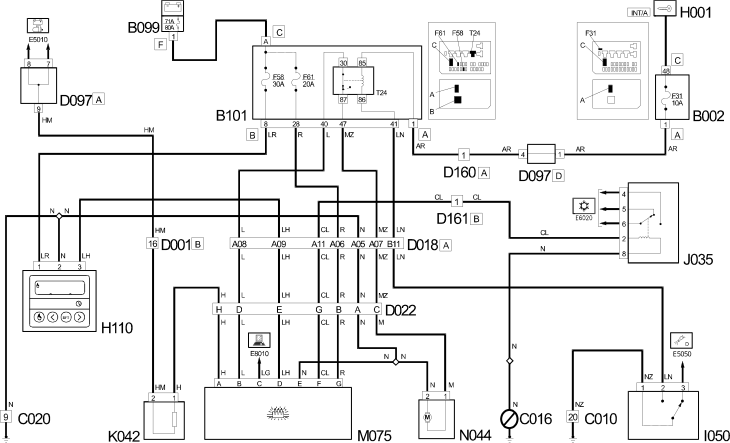

E6015 ADDITIONAL HEATER WIRING DIAGRAM
- Path
- Electrical equipment > 1 ELECTRICAL FUNCTIONS > E60 CLIMATE CONTROL SYSTEM > E6015 ADDITIONAL HEATER > E6015 ADDITIONAL HEATER WIRING DIAGRAM
- Kind
- topic
- Applies to
- all engines; all production periods
- Interactive page
- https://sloeber94.github.io/elrnDB-fDct/en/#/244001980
Applies to: all engines; all production periods
Wiring Diagram

Components
Component code | Description | Reference to the assembly |
|---|---|---|
JUNCTION UNIT UNDER DASHBOARD | - | |
MAXI FUSE BOX ON BATTERY | - | |
OPTIONAL JUNCTION UNIT UNDER THE DASHBOARD | - | |
LEFT FRONT EARTH | - | |
FRONT/DASHBOARD COUPLING | - | |
ADDITIONAL FRONT/DASHBOARD COUPLING | - | |
COUPLING FOR ADDITIONAL HEATER | - | |
SHORT CIRCUITING COUPLING | - | |
DASHBOARD/OPTIONAL DASHBOARD COUPLING | - | |
ADDITIONAL AIR CONDITIONING TEMPERATURE CONTROLS | - | |
INERTIA SWITCH | ||
AIR TEMPERATURE SENSOR | - | |
AIR PRESSURE - TEMPERATURE SENSOR | - | |
ADDITIONAL HEATER CONTROL UNIT | - | |
ADDITIONAL HEATER ELECTRIC PUMP | - | |
- |
Topics linked from this page (15)
- B002 JUNCTION UNIT UNDER DASHBOARD
- B099 MAXI FUSE BOX ON BATTERY
- B101 OPTIONAL JUNCTION UNIT UNDER THE DASHBOARD
- C010 LEFT FRONT EARTH
- D001 FRONT/DASHBOARD COUPLING
- D018 ADDITIONAL FRONT/DASHBOARD COUPLING
- D022 COUPLING FOR ADDITIONAL HEATER
- D097 SHORT CIRCUITING COUPLING
- D160 DASHBOARD/OPTIONAL DASHBOARD COUPLING
- H110 ADDITIONAL AIR CONDITIONING TEMPERATURE CONTROLS
- I050 INERTIA SWITCH
- K042 AIR TEMPERATURE SENSOR
- K044 AIR PRESSURE - TEMPERATURE SENSOR
- M075 ADDITIONAL HEATER CONTROL UNIT
- N044 ADDITIONAL HEATER ELECTRIC PUMP